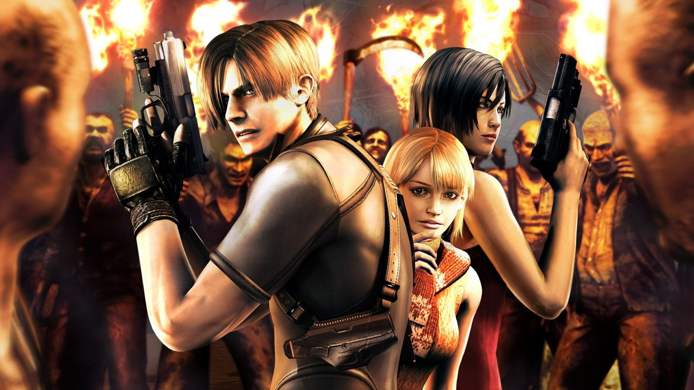

RE0

O que eu acho?
Esse jogo teria sido um ótimo jogo de multiplayer, lembro de jogar ele e falar para alguns amigos que seria muito bom jogar com alguém, porém ele é muito bom do jeito que é, tem partes que te assustam, aquele leve e trás de itens que eu gosto também.
RE1

O que eu acho?
Só zerei o remake, até cheguei a jogar um pouco do original por um breve tempo, mas enfim, esse jogo é maravilhoso, essa variedade de inimigos é ótimo, até hoje, sonho com um remake nessa nova engine da Capcom, mas sem cortes.
RE2
O que eu acho?
Mais um que eu só zerei o remake, mas já vi sobre o original, o que fez eu até perder um pouquinho do encanto pelo remake pois vinha com dois discos por exemplo Claire-A e Leon-B, suas escolhas e feitos na primeira campanha afetava diretamente na segunda e isso não existe no remake, mas na época achei incrível, até comecei a fazer speedrun por ter gostado bastante.
RE3
O que eu acho?
Esse me deixa muito decepcionado pelo remake, esse jogo (original), tinhamos escolhas, mapas semi-abertos, resumindo era um jogo "grande" e no remake parecia um resumão, o remake não é ruim só é pouco.
RE4
O que eu acho?
Chegamos no meu jogo favorito de todos os tempos, sei que não é perfeito, até entendo quem torce o nariz pra ele, mas eu gosto muito desse, tenho ótimas lembranças, vira e mexe, eu volto a jogar meu primeiro game zerado de ps2, talvez seja o jogo que mais joguei na vida.(Ainda não joguei o remake para falar sobre.)
RE5
O que eu acho?
Aqui o negócio ja começa a não ficar tão bom, pelo menos pro meu gosto, esse jogo para quem joga em coop é bom sim, até porque quando eu zerei com um amigo meu, foi muito divertido, mas minha primeira experiência jogando solo, eu não gostei. Parecia muito uma cópia que não deu certo.
RE6
O que eu acho?
Mais um que não me pegou, sou fã da saga, mas esse extrapolou muito, muitas coisas acontecendo ao mesmo tempo, muita ação, muita explosão, até hoje não terminei todas as campanhas por achar chato. Mas, é aquilo, para jogar com alguém fica legal.
RE7
O que eu acho?
Aqui reacendeu aquela sensação boa que eu tinha quando conheci a saga, apesar de não ter zerado os clássicos sempre procurava coisas sobre eles, principalmente vídeos falando sobre ou de gameplays, enfim muito bom esse jogo, apesar de não ser muito fã de jogos em 1° pessoa, mas entendo que para dar sustos é melhor, inimigos muito bons explorando variações de terror.
RE8
O que eu acho?
Até então, o último jogo com história nova da franquia, também gostei desse aqui pela sua temática, lembrando outro jogo que gosto muito (Bloodborne), porém tem uma personagem, que ao meu ver tinha potencial de ser bem mais do que foi, poderia ter sido mais explorada, ter tido mais tempo, ou até ter se tornado a vilã principal do jogo, isso decepcionou um pouco. E o jogo teve uma atualização para jogar em 3° pessoa também que me agrada mais nesse tipo de jogo.